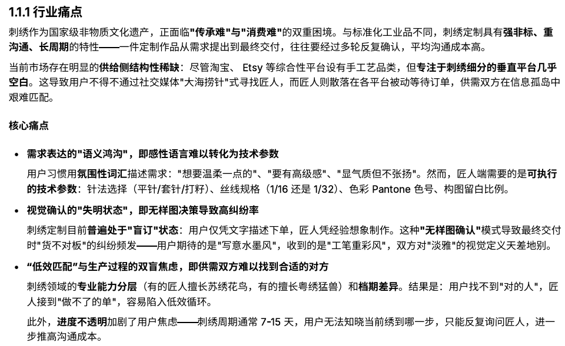
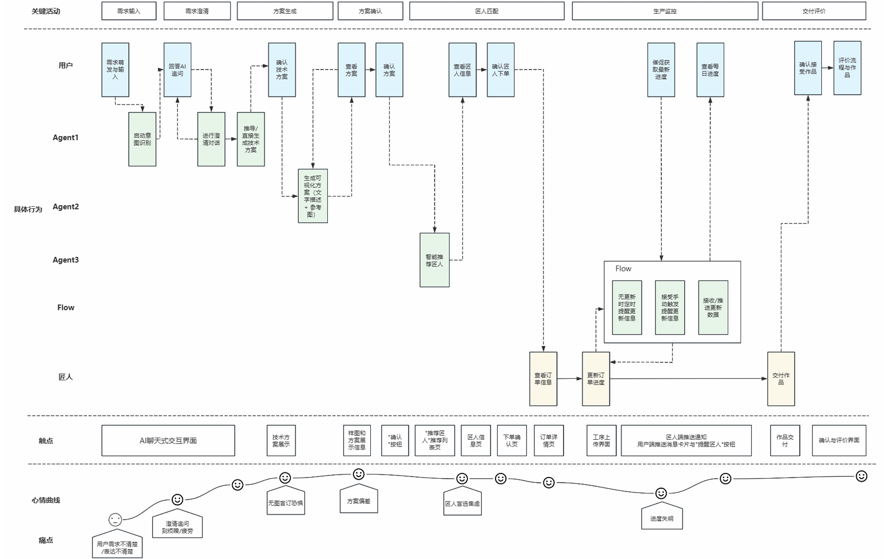
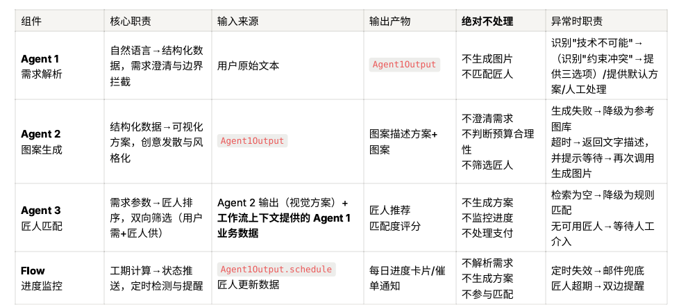
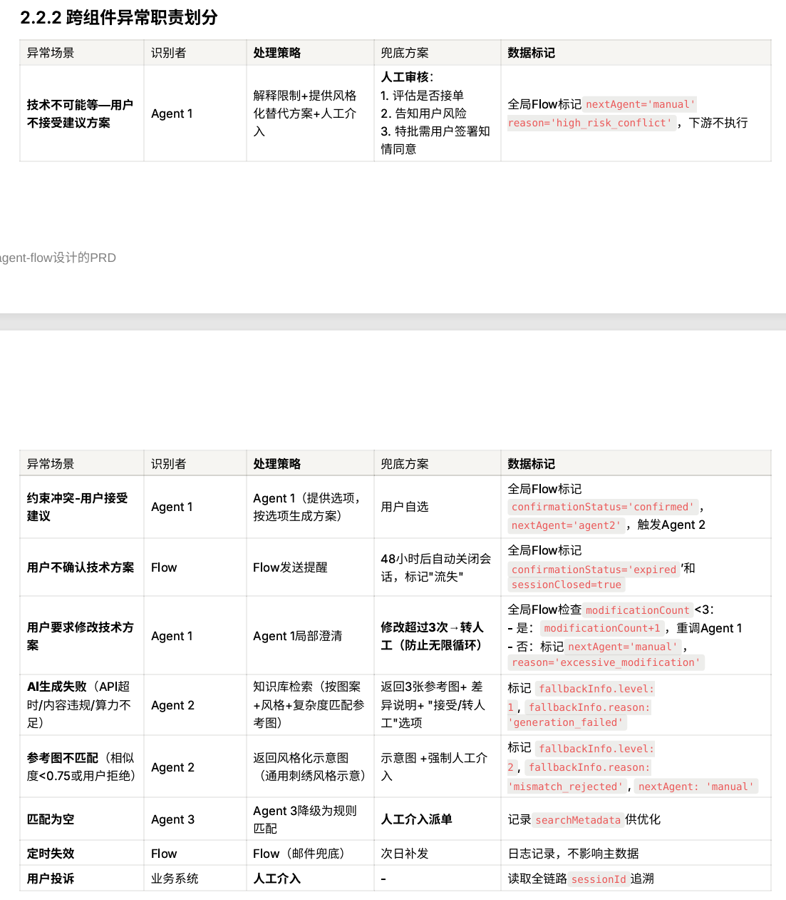
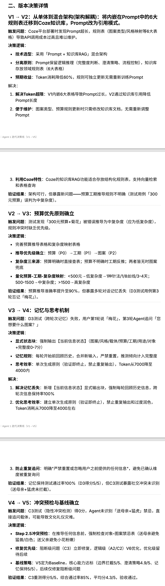
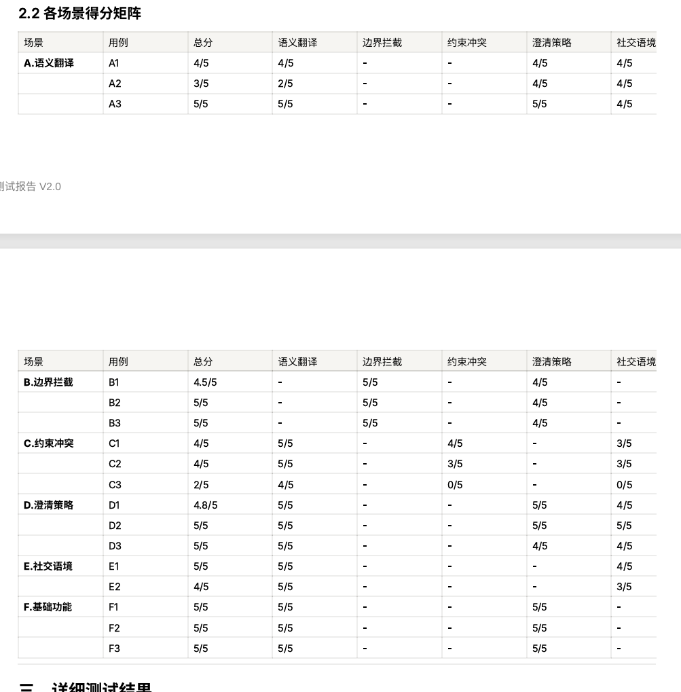
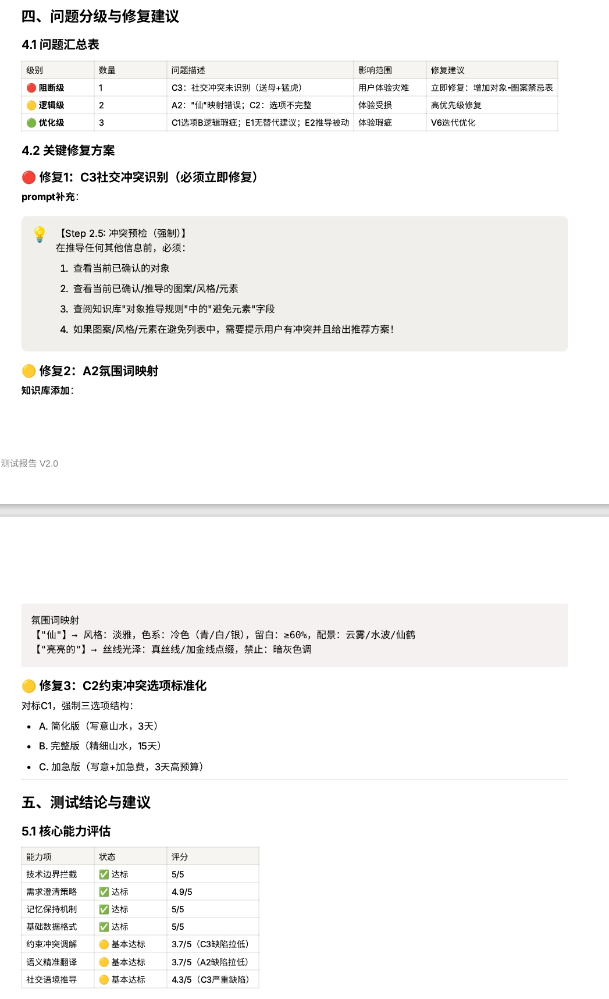
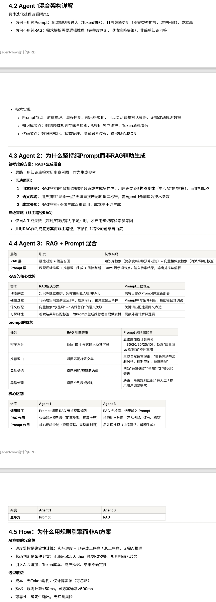

4-Agent串联架构 · 职责边界与接口契约 · MVP落地验证
刺绣作为国家级非物质文化遗产，面临"传承难"与"消费难"双重困境。与标准化工业品不同，刺绣定制具有强非标、重沟通、长周期特性——一件定制作品从需求提出到最终交付，往往要经过多轮反复确认，平均沟通成本高。
核心痛点：
• 语义鸿沟：用户用"温柔一点""要有高级感"等感性词汇描述需求，匠人需要的是可执行的技术参数（针法、丝线规格、Pantone色号）<
• 视觉失明：用户仅凭文字描述下单，匠人凭经验想象制作，交付时"货不对板"纠纷频发
• 低效匹配：匠人专业能力分层（有的擅长苏绣花鸟，有的擅长粤绣猛兽）和档期差异，导致用户找不到"对的人"

行业痛点分析
独立设计4-Agent串联架构，每个Agent有明确职责边界、输入输出契约和异常兜底策略：
Agent 1 需求解析：自然语言→结构化数据。7维度完整度评分（0-7分），≤4轮澄清对话，输出6模块文字方案+JSON
Agent 2 图案生成：结构化数据→3张视觉方案。基于Seedream生成参考图，含3层降级策略
Agent 3 匠人匹配：需求参数→Top 3匠人。五维度评分（流派30%/复杂度30%/预算20%/档期10%/历史10%）<
Flow 进度监控：规则引擎驱动。R1-R6规则（每日播报/延期预警/工序确认/deadline临近/长期停滞/交付完成）

用户旅程图

4-Agent分层系统架构图

职责边界表格
Agent 1是整个系统的核心差异化，承担"需求标准化"职责。采用Prompt+RAG混合架构：Prompt负责逻辑推理，知识库存放6大规则表。

Agent 1迭代决策线V1→V5
建立6维度加权评分法（语义翻译20%/边界拦截20%/约束冲突20%/澄清策略20%/社交语境10%/基础功能10%），16项测试用例覆盖6大场景类型。
| 级别 | 问题 | 修复方案 | 结果 |
|---|---|---|---|
| 🔴 阻断级 | C3：送母亲+猛虎未识别 | 增加Step 2.5冲突预检 | 修复后5/5 |
| 🟡 逻辑级 | A2："仙"映射错误 | 知识库添加氛围词映射 | V6优化 |
| 🟡 逻辑级 | C2：选项不完整 | 强制三选项结构 | V6优化 |


Agent 1测试报告V2.0（部分内容）
基于"能跑通的Demo > 完美的架构"原则，在Coze平台完成MVP落地：
• 保留：Agent 1核心差异化、Agent 2视觉生成、简单匠人匹配、5页面应用
• 裁剪：Flow规则引擎改为静态演示、多轮修改简化为1次、完整RAG改为硬编码规则
• 妥协：固定4轮澄清、history字段显式传递、布尔变量模拟状态机
每个Agent的技术方案不是拍脑袋，而是基于任务特性的理性选择：
| Agent | 任务特性 | 最终选择 | 关键决策理由 |
|---|---|---|---|
| Agent 1 | 逻辑推理+规则推导 | Prompt+RAG混合 | 纯Prompt Token超限；纯RAG无法处理澄清策略 |
| Agent 2 | 创意生成+视觉输出 | 纯Prompt | RAG限制创意发散；用户需要3张构图变体 |
| Agent 3 | 知识检索+精准匹配 | RAG+Prompt混合 | 匠人数据动态变化；五维度排序需Prompt推理 |
| Flow | 确定性状态流转 | 规则引擎 | 进度计算是确定性问题；规则引擎无Token消耗 |

Prompt/RAG/微调三维度对比 + 4个Agent选型理由